-
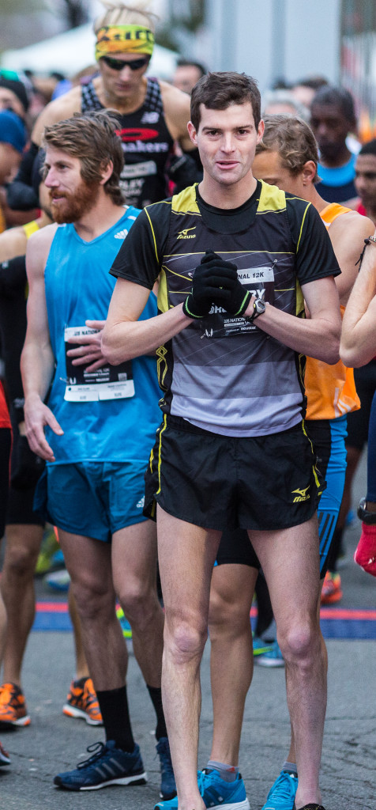
Wait a Minute, was That? Go Christo!
It wasn’t a bad showing. He had placed fourth at the inaugural U.S. 12k championships, the culmination of the 2013 American professional road racing circuit. For Christo Landry, who runs professionally for Mizuno, that year included three more top-five finishes in U.S. championships, including in the marathon, held just six week earlier. But this race was special for him — because the Northern Virginia native was racing on his home turf in Alexandria. “This race exceeded all of my expectations,” he said. You have to wonder, then: Imagine if Landry had known what was coming in the next year. -
Boit, Keflezighi, Landry, True named USATF Champions
Four U.S. athletes have been named USATF champions after the U.S. Anti-Doping Agency (USADA) announced a four-year doping sanction on Mo Trafeh. Due to the ruling, Trafeh is disqualified from all competitive results obtained on and subsequent to January 1, 2012, including forfeiture of any medals, points and prizes. -
Christo Landry’s Season to Remember
It's been a season of success for Christo Landry. Before the 2014 season, Landry had seen plenty of success on the roads, but a national title eluded him. This year, from the gun, Landry attacked, and for a while he looked unbeatable, scoring three straight national titles over 10 Mile, 25 km and 10 km distances. Close runner-up finishes at the USA 7 Mile and USA 20 km Championships clinched the USARC overall victory for the 28 year old and now he sets his sights on the final USARC race of the season, the .US National 12K. We caught up with Landry this week, discussing his big season, the final race of the season and a whole lot more. -
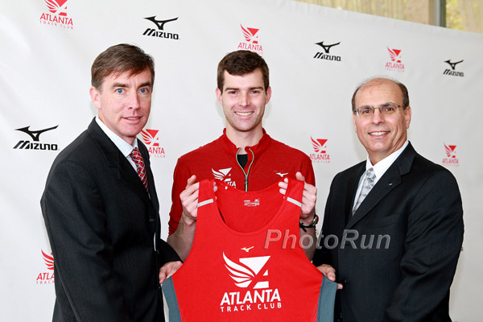photo by PhotoRun.net
Atlanta Track Club & Mizuno USA sign historic "integrated marketing " agreement
In an announcement with far-reaching consequences, the Atlanta Track Club and Mizuno, one of the largest sports product manufacturers in the world, have reached a long term agreement for Mizuno to sponsor all facets of the Atlanta Track Club, its events and its merchandise. -
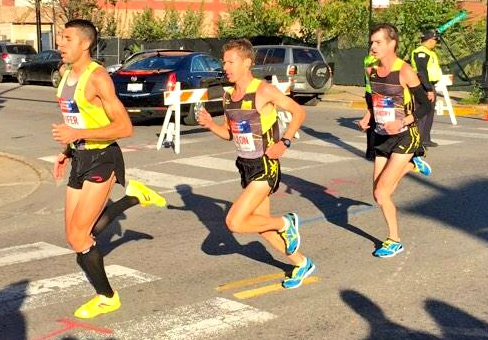
-
Christo Landry With 150 Mile Weeks and 32 Mile Long Runs Behind Him is Ready for Chicago
Landry has been on fire in 2014 winning the US 10k, 10 mile and 25k road titles and setting a US 25k record. He said this year he isn’t doing anything different, just building on what he’s done in previous years. He said, “I don’t think I’ve done all that much different this year. Main thing is I’ve been able to put another successful cycle back to back on top of my previous years. Each year I’ve been getting a little better…My first year on the roads I got dropped 80% through the race, last year, I could make it to the final kick…. This year a couple times I came out on top.” -
Fan Voting is Now Open for Jesse Owens and Jackie Joyner-Kersee Athletes of the Year
INDIANAPOLIS -- Track and field fans have the opportunity to help select USA Track & Field’s 2014 Jesse Owens and Jackie Joyner-Kersee winners through online voting. Honoring the country’s top male and female track and field athletes, the Jesse Owens and Jackie Joyner-Kersee winners are selected by a vote of the media in combination with online fan balloting, with media votes weighing 90 percent of the vote and fan voting 10 percent. -
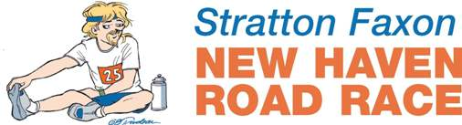
-

New Haven Road Race: Christo Landry one of the favorites
As weird as it sounds, distance runner Christo Landry’s favorite post-race meal is pizza. On Labor Day, the 6-foot-1, 145-pound Landry will have plenty of options to satisfy that craving in a city known for its pizza. Landry is set to take part in the 37th annual Faxon Law New Haven Road Race, which doubles as the 20K national championship. -

-

-

Emerging Landry should be Meb's main competition
One of Christo Landry’s most vivid memories of his only previous visit to the Quad-City Times Bix 7 was the night before the race. He and the other elite runners were hanging out at St. Ambrose University and fellow American Abdi Abdirahman, who was born in Somalia, brought him a heaping plate of ugali, the sticky, heavy porridge that is a staple of the diet of the runners from Kenya. “I thought it was pretty cool that a multi-time Olympian was bringing me a plate of something that the Kenyan runners eat every day,’’ Landry said. -

-
Landry wins Peachtree, 10k national title
Christo Landry gambled in the final mile and won The Atlanta Journal-Constitution Peachtree Road Race to become the U.S. 10K champion Friday. After a fast start, Landry and Tyler Pennel began to break away from the pack of 32 elite runners at mile 5 of the 6.2-mile race. As they began to run uphill in the last 500 yards, Landry made his move. He finished in a time of 28 minutes, 25 seconds, which was five seconds ahead of Pennel. “I figured the easiest way to break away is to make that one hard move,” said Landry, who was draped in a U.S. flag after the race. “If he didn’t make a split-second decision on an uphill, I was going to be able to get a big step on him, and it would be pretty hard to catch me.” -
Christo Landry hopes to win his 3rd US road title of year at Peachtree
For 28-year-old Christo Landry, Friday’s Atlanta Journal Constitution Peachtree Road Race presents a rare opportunity. The College of William & Mary alum is going for his third national road racing title in a row, hoping to add a USA 10-K Championship to the USA 10-Mile and 25-K crowns earned earlier this year. -
Christo Landry the top American finisher at River Bank Run, but, oh, for just one more second
Christo Landry said the day before the Fifth Third River Bank Run that he needed to cover the late surges to achieve his goal of winning or finishing as the top American. He did that Saturday, though he wishes he did it with a second to spare. -
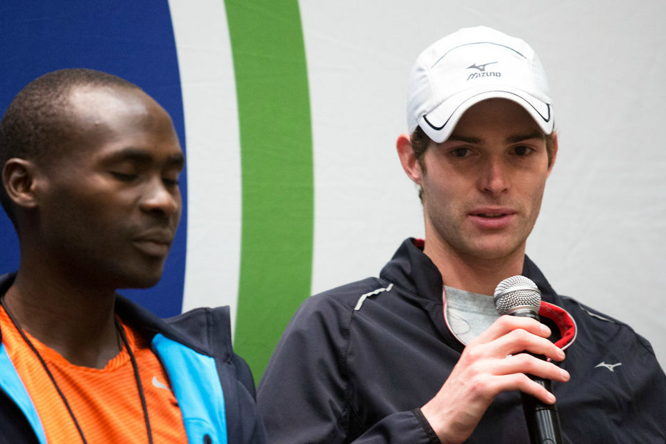
River Bank Run elite field: Christo Landry has been close to winning, now looks to cover final surge
Christo Landry has been close to winning the Fifth Third River Bank Run the past two years, minus one element - covering the final leg. The 27-year-old Ann Arbor resident finished fifth overall a year ago - the third American behind Mo Trafeh and Matt Tegenkamp, - with an improved time by 47 seconds over his 2012 finish of one hour, 15 minutes and 47 seconds when he was the second American and third overall. -
-
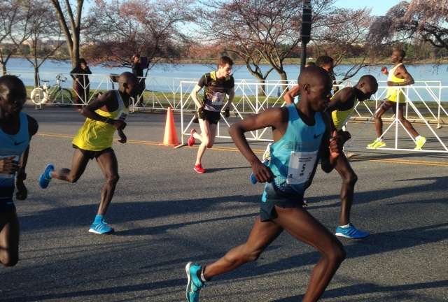
Falls Church native captures first national title at Cherry Blossom
Chasing Greg Meyer’s American record put Christo Landry in contention at the Cherry Blossom Ten Mile, and though he fell short of the 46:13 standard, the Falls Church native came away with his first national championship in 46:41. His finish put him sixth overall. -
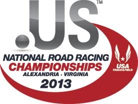
-
-

Ann Arbor runner Christo Landry finds mixed results at Fifth Third River Bank Run
Being close in the Fifth Third River Bank Run wasn’t much consolation for Christo Landry, but getting closer was decent motivation. The Ann Arbor resident hung with the lead pack in Saturday’s race only to fade late and finish fifth in 1 hour, 15 minutes even. That was two places lower but 47 seconds faster than last year in Grand Rapids. -
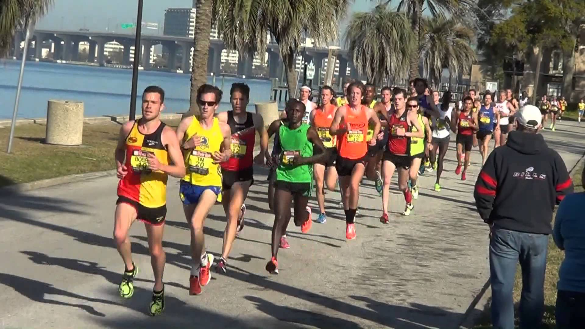
Christo Landry and Craig Curley place 5th and 7th at the USA 15k National Championships
Billed as the largest 15K (9.3 miles) in the United States (over 17,000 registered runners with 15,569 finishers), Mizuno Racing Team Members, Christo Landry and Craig Curley opened up their 2013 competitive road race campaigns with very solid efforts, as Christo placed 5th with a time of 43:46 (4:42 per mile) and Craig Curley was 7th in 44:04 (4:44 per mile). -
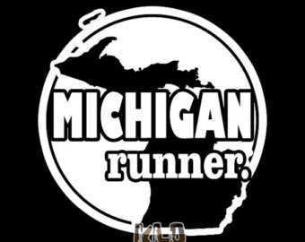
-
-
-
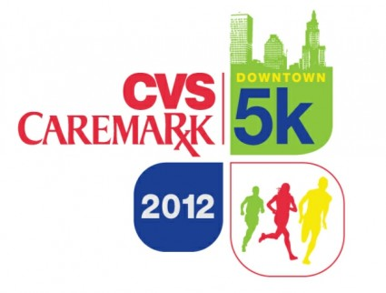
-
-
Christo Landry '08 17th in Men's 10K at the Olympic Trials
The U.S. Olympic Trials for track and field got off to a rainy start Friday, and two men with William and Mary ties took their shot at earning a trip to the London Olympics. Leading the way was Christo Landry '08, who finished 17th in the 10,000m, while Patrick Roach J.D. '12 bowed in the 800m quarterfinals. -
-
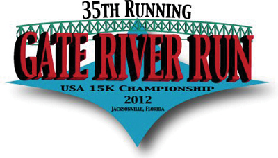
-
Tribe Alums Lead U.S. Team to Best-Ever Finish at Izumo Ekiden Relay
At the start of the Japanese University Ekiden relay season, it was a team of U.S. post-grads who stole the show led by two of William and Mary's former greats, Christo Landry '08 and Jon Grey '11. The 44.5-kilometer Izumo Ekiden traditionally pits 20 university teams from Japan against a team put together from Ivy League alums, but the American pool was widened this season to include athletes from all schools. Responding to the challenge, the University Select team claimed it's first-ever top-10 finish, taking eighth just four minutes behind the winners. -
-
-